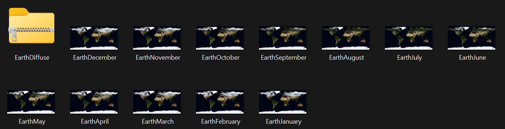

These maps are in 5K. Couldn't bother to wait for the 21K maps to download. These maps were taken off of NASA's Visible Earth thing (credits to NASA Earth Observatory). According to https://earthobservatory.nasa.gov/features/BlueMarble, you should credit the NASA Earth Observatory when using these maps.
This .zip file includes what the Earth looks like every month. Useful if you need attention to detail on your project. I've provided a Google Drive link because the file is above 25 MB which makes it impossible to upload through the browser, and the file is also above 100 MB which makes it impossible to upload through command-line.
DownloadPreview:
This is a bump map for displacement.
Download